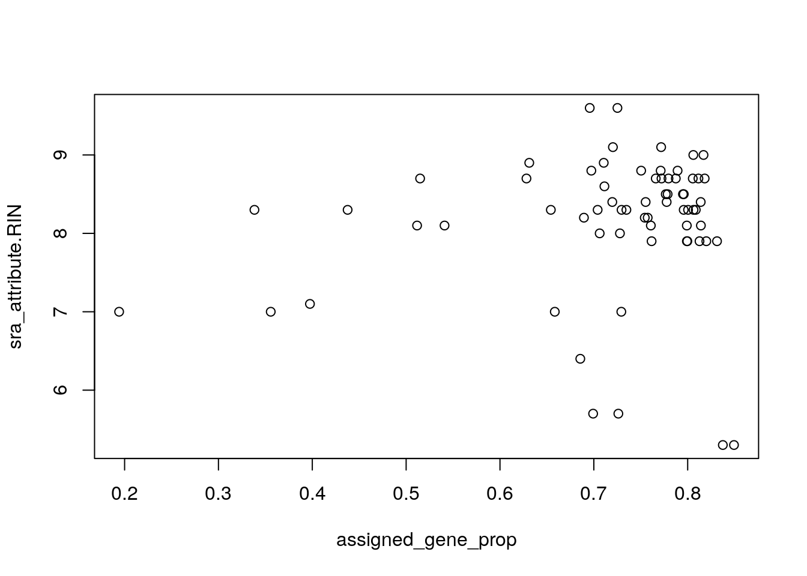
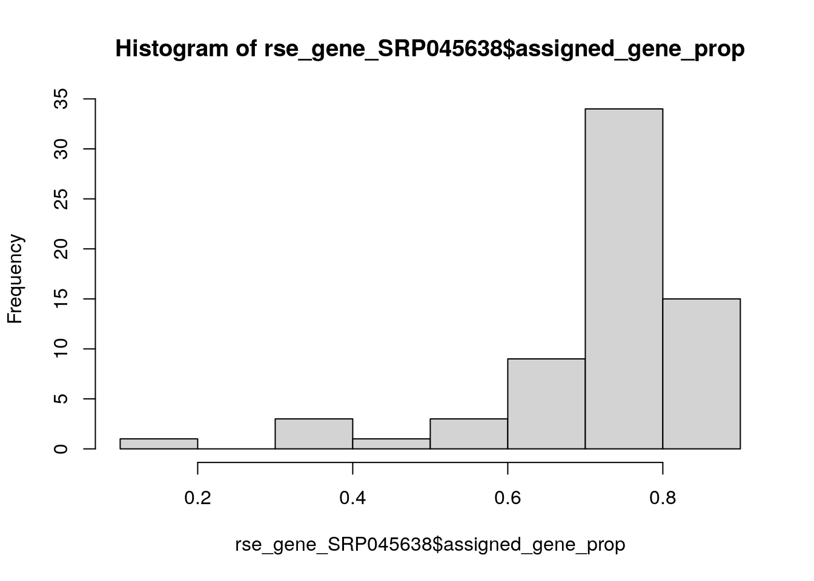
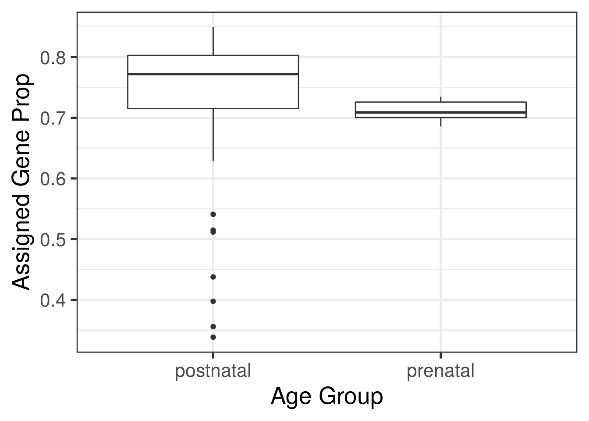
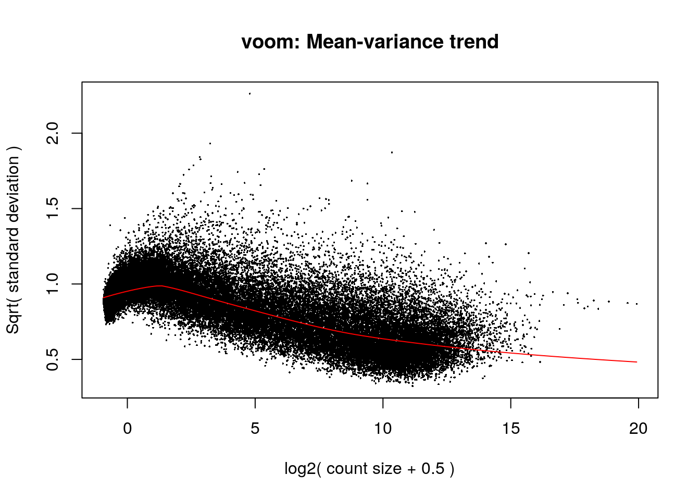
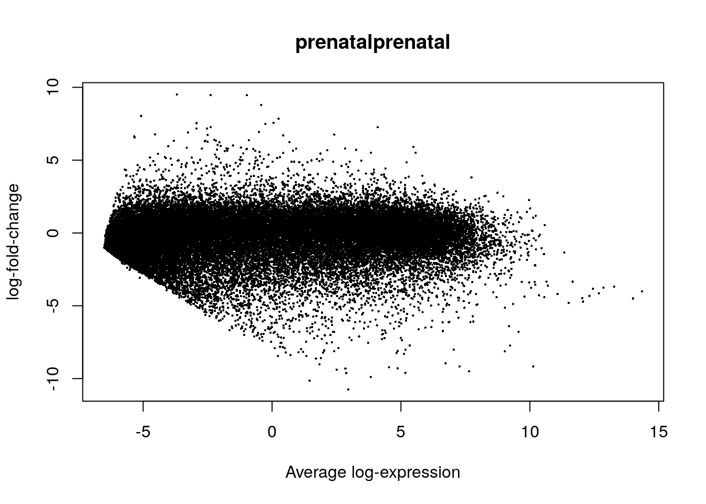
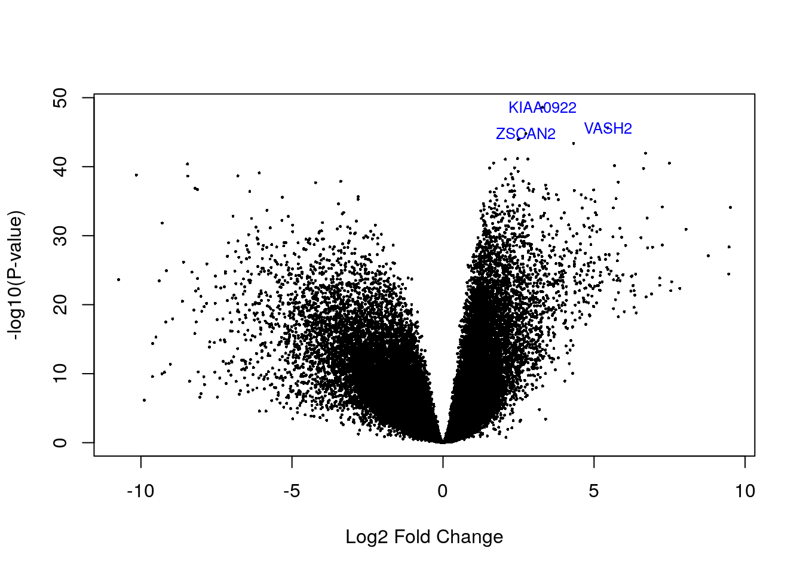
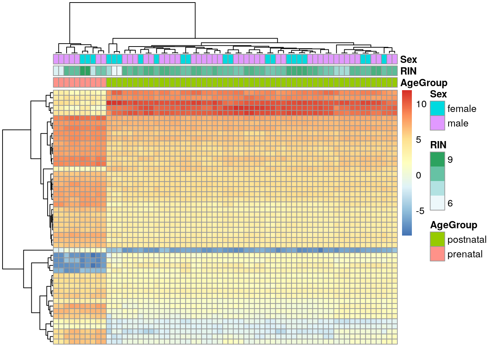
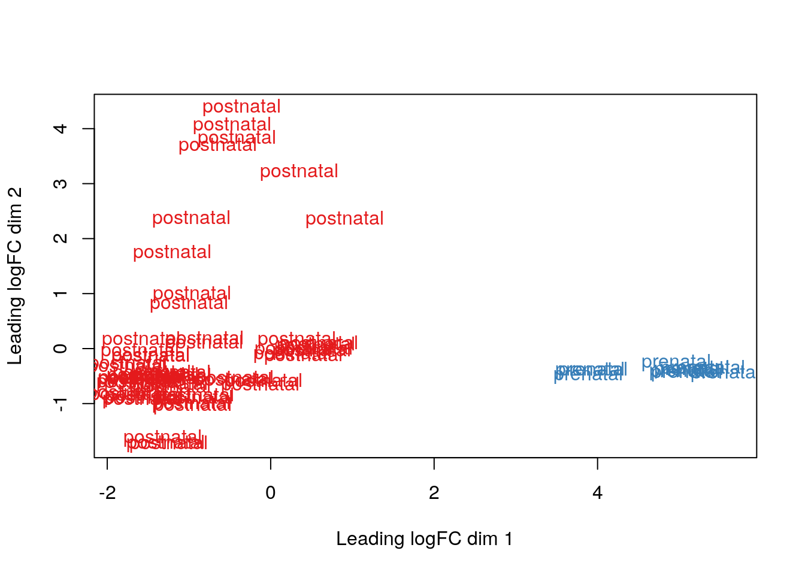
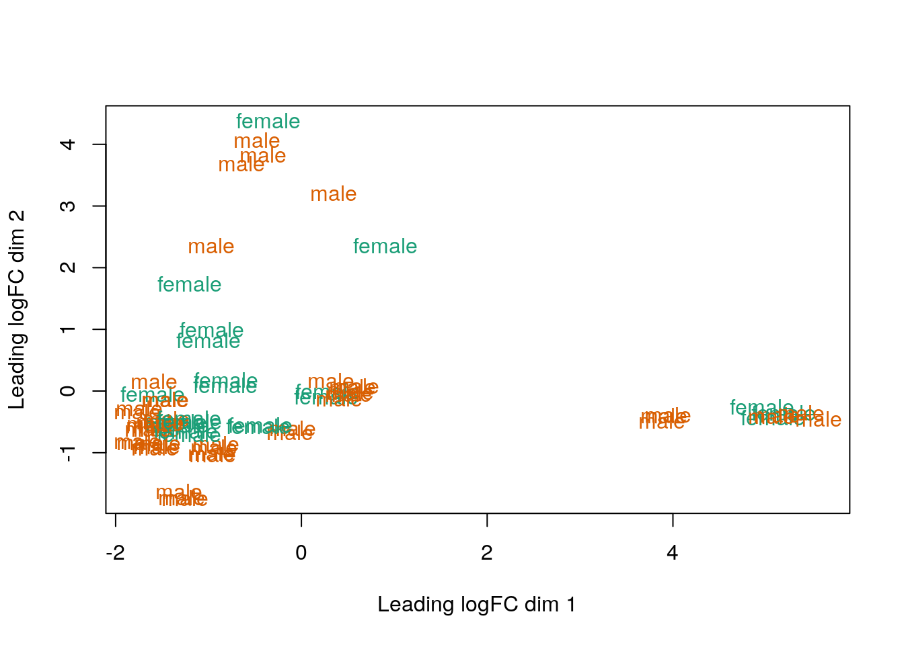
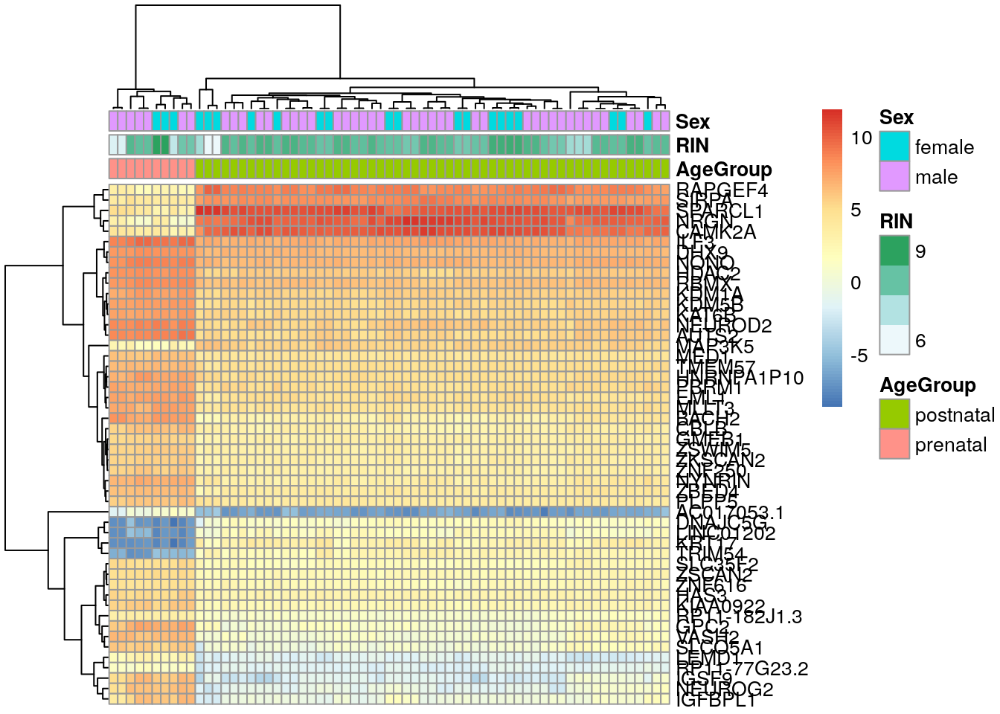

5 Modelos estadísticos
- Revisión de regresión lineal https://lcolladotor.github.io/bioc_team_ds/helping-others.html#linear-regression-example
- Con R, usamos mucho la función
model.matrix()y la sintáxis de fórmulaY ~ X1 + X2tal como en el siguiente ejemplo.
## (Intercept) log(Height) log(Girth)
## 1 1 4.248495 2.116256
## 2 1 4.174387 2.151762
## 3 1 4.143135 2.174752
## 4 1 4.276666 2.351375
## 5 1 4.394449 2.370244
## 6 1 4.418841 2.379546
## 7 1 4.189655 2.397895
## 8 1 4.317488 2.397895
## 9 1 4.382027 2.406945
## 10 1 4.317488 2.415914
## 11 1 4.369448 2.424803
## 12 1 4.330733 2.433613
## 13 1 4.330733 2.433613
## 14 1 4.234107 2.459589
## 15 1 4.317488 2.484907
## 16 1 4.304065 2.557227
## 17 1 4.442651 2.557227
## 18 1 4.454347 2.587764
## 19 1 4.262680 2.617396
## 20 1 4.158883 2.624669
## 21 1 4.356709 2.639057
## 22 1 4.382027 2.653242
## 23 1 4.304065 2.674149
## 24 1 4.276666 2.772589
## 25 1 4.343805 2.791165
## 26 1 4.394449 2.850707
## 27 1 4.406719 2.862201
## 28 1 4.382027 2.884801
## 29 1 4.382027 2.890372
## 30 1 4.382027 2.890372
## 31 1 4.465908 3.025291
## attr(,"assign")
## [1] 0 1 2## [1] "(Intercept)" "log(Height)" "log(Girth)"- ¿Cómo interpretamos los nombres de las columnas de
mat?
##
## Call:
## lm(formula = log(Volume) ~ log(Height) + log(Girth), data = trees)
##
## Residuals:
## Min 1Q Median 3Q Max
## -0.168561 -0.048488 0.002431 0.063637 0.129223
##
## Coefficients:
## Estimate Std. Error t value Pr(>|t|)
## (Intercept) -6.63162 0.79979 -8.292 5.06e-09 ***
## log(Height) 1.11712 0.20444 5.464 7.81e-06 ***
## log(Girth) 1.98265 0.07501 26.432 < 2e-16 ***
## ---
## Signif. codes: 0 '***' 0.001 '**' 0.01 '*' 0.05 '.' 0.1 ' ' 1
##
## Residual standard error: 0.08139 on 28 degrees of freedom
## Multiple R-squared: 0.9777, Adjusted R-squared: 0.9761
## F-statistic: 613.2 on 2 and 28 DF, p-value: < 2.2e-165.1 ExploreModelMatrix
- Es un paquete de Bioconductor que nos ayuda a entender los modelos estadísticos que estamos usando gracias a visualizaciones http://www.bioconductor.org/packages/ExploreModelMatrix/ que está descrito en el siguiente artículo
- Revisaremos los ejemplos en http://www.bioconductor.org/packages/release/bioc/vignettes/ExploreModelMatrix/inst/doc/ExploreModelMatrix.html
5.1.1 Ejemplo 1
## Datos de ejemplo
(sampleData <- data.frame(
genotype = rep(c("A", "B"), each = 4),
treatment = rep(c("ctrl", "trt"), 4)
))## genotype treatment
## 1 A ctrl
## 2 A trt
## 3 A ctrl
## 4 A trt
## 5 B ctrl
## 6 B trt
## 7 B ctrl
## 8 B trt## Creemos las imágenes usando ExploreModelMatrix
vd <- ExploreModelMatrix::VisualizeDesign(
sampleData = sampleData,
designFormula = ~ genotype + treatment,
textSizeFitted = 4
)
## Veamos las imágenes
cowplot::plot_grid(plotlist = vd$plotlist)De forma interactiva podemos correr el siguiente código:
5.1.2 Ejemplo 2
5.1.3 Ejemplo 3
5.1.4 Ejercicio
- Interpreta
ResponseResistant.Treatmentpredel ejercicio 2. Puede ser útil tomar un screenshot (captura de pantalla) y anotarla con líneas de colores. Si haces eso, puedes incluir la imagen en tus notas. - ¿Por qué es clave el
0al inicio de la fórmula en el ejercicio 3?
5.1.5 Para aprender más
A guide to creating design matrices for gene expression experiments:
- http://bioconductor.org/packages/release/workflows/vignettes/RNAseq123/inst/doc/designmatrices.html
- https://f1000research.com/articles/9-1444
“Model matrix not full rank”
5.2 Datos de SRP045638
Vamos a usar datos de https://www.ncbi.nlm.nih.gov/sra/?term=SRP045638 procesados con recount3. Primero hay que descargar los datos con los comandos que vimos ayer.
## 2021-02-26 15:05:45 caching file sra.recount_project.MD.gz.## 2021-02-26 15:05:46 caching file gtex.recount_project.MD.gz.## 2021-02-26 15:05:47 caching file tcga.recount_project.MD.gz.rse_gene_SRP045638 <- create_rse(
subset(
human_projects,
project == "SRP045638" & project_type == "data_sources"
)
)## 2021-02-26 15:05:51 downloading and reading the metadata.## 2021-02-26 15:05:52 caching file sra.sra.SRP045638.MD.gz.## adding rname 'http://duffel.rail.bio/recount3/human/data_sources/sra/metadata/38/SRP045638/sra.sra.SRP045638.MD.gz'## 2021-02-26 15:05:53 caching file sra.recount_project.SRP045638.MD.gz.## adding rname 'http://duffel.rail.bio/recount3/human/data_sources/sra/metadata/38/SRP045638/sra.recount_project.SRP045638.MD.gz'## 2021-02-26 15:05:54 caching file sra.recount_qc.SRP045638.MD.gz.## adding rname 'http://duffel.rail.bio/recount3/human/data_sources/sra/metadata/38/SRP045638/sra.recount_qc.SRP045638.MD.gz'## 2021-02-26 15:05:55 caching file sra.recount_seq_qc.SRP045638.MD.gz.## adding rname 'http://duffel.rail.bio/recount3/human/data_sources/sra/metadata/38/SRP045638/sra.recount_seq_qc.SRP045638.MD.gz'## 2021-02-26 15:05:55 caching file sra.recount_pred.SRP045638.MD.gz.## adding rname 'http://duffel.rail.bio/recount3/human/data_sources/sra/metadata/38/SRP045638/sra.recount_pred.SRP045638.MD.gz'## 2021-02-26 15:05:56 downloading and reading the feature information.## 2021-02-26 15:05:57 caching file human.gene_sums.G026.gtf.gz.## 2021-02-26 15:05:58 downloading and reading the counts: 66 samples across 63856 features.## 2021-02-26 15:05:58 caching file sra.gene_sums.SRP045638.G026.gz.## adding rname 'http://duffel.rail.bio/recount3/human/data_sources/sra/gene_sums/38/SRP045638/sra.gene_sums.SRP045638.G026.gz'## 2021-02-26 15:06:02 construcing the RangedSummarizedExperiment (rse) object.Una vez descargados y con los números de lecturas podemos usar expand_sra_attributes(). Sin embargo, tenemos un problema con estos datos.
## [1] "age;;67.78|biomaterial_provider;;LIBD|BioSampleModel;;Human|dev_stage;;Fetal|disease;;Control|Fraction;;total|isolate;;DLPFC|race;;AA|RIN;;8.3|sex;;female|tissue;;DLPFC"
## [2] "age;;40.42|biomaterial_provider;;LIBD|BioSampleModel;;Human|disease;;Control|Fraction;;total|isolate;;DLPFC|race;;AA|RIN;;8.4|sex;;male|tissue;;DLPFC"
## [3] "age;;41.58|biomaterial_provider;;LIBD|BioSampleModel;;Human|disease;;control|Fraction;;total|isolate;;R2869|race;;AA|RIN;;8.7|sex;;male|tissue;;DLPFC"Vamos a intentar resolverlo eliminando información que está presente solo en ciertas muestras.
rse_gene_SRP045638$sra.sample_attributes <- gsub("dev_stage;;Fetal\\|", "", rse_gene_SRP045638$sra.sample_attributes)
rse_gene_SRP045638$sra.sample_attributes[1:3]## [1] "age;;67.78|biomaterial_provider;;LIBD|BioSampleModel;;Human|disease;;Control|Fraction;;total|isolate;;DLPFC|race;;AA|RIN;;8.3|sex;;female|tissue;;DLPFC"
## [2] "age;;40.42|biomaterial_provider;;LIBD|BioSampleModel;;Human|disease;;Control|Fraction;;total|isolate;;DLPFC|race;;AA|RIN;;8.4|sex;;male|tissue;;DLPFC"
## [3] "age;;41.58|biomaterial_provider;;LIBD|BioSampleModel;;Human|disease;;control|Fraction;;total|isolate;;R2869|race;;AA|RIN;;8.7|sex;;male|tissue;;DLPFC"Ahora si podemos continuar con el mismo código de ayer.
rse_gene_SRP045638 <- expand_sra_attributes(rse_gene_SRP045638)
colData(rse_gene_SRP045638)[
,
grepl("^sra_attribute", colnames(colData(rse_gene_SRP045638)))
]## DataFrame with 66 rows and 10 columns
## sra_attribute.age sra_attribute.biomaterial_provider sra_attribute.BioSampleModel sra_attribute.disease
## <character> <character> <character> <character>
## SRR2071341 67.78 LIBD Human Control
## SRR2071345 40.42 LIBD Human Control
## SRR2071346 41.58 LIBD Human control
## SRR2071347 44.17 LIBD Human control
## SRR2071348 -0.3836 LIBD Human control
## ... ... ... ... ...
## SRR2071366 66.72 LIBD Human control
## SRR2071372 43.88 LIBD Human control
## SRR2071373 15.17 LIBD Human control
## SRR2071374 70.95 LIBD Human control
## SRR2071375 4.14 LIBD Human control
## sra_attribute.Fraction sra_attribute.isolate sra_attribute.race sra_attribute.RIN sra_attribute.sex
## <character> <character> <character> <character> <character>
## SRR2071341 total DLPFC AA 8.3 female
## SRR2071345 total DLPFC AA 8.4 male
## SRR2071346 total R2869 AA 8.7 male
## SRR2071347 total R3098 AA 5.3 female
## SRR2071348 total R3452 AA 9.6 female
## ... ... ... ... ... ...
## SRR2071366 total R3763 CAUC 7 female
## SRR2071372 total R4166 AA 8.7 male
## SRR2071373 total R4196 CAUC 7.9 female
## SRR2071374 total R4338 AS 8.3 male
## SRR2071375 total R4699 CAUC 8.7 male
## sra_attribute.tissue
## <character>
## SRR2071341 DLPFC
## SRR2071345 DLPFC
## SRR2071346 DLPFC
## SRR2071347 DLPFC
## SRR2071348 DLPFC
## ... ...
## SRR2071366 DLPFC
## SRR2071372 DLPFC
## SRR2071373 DLPFC
## SRR2071374 DLPFC
## SRR2071375 DLPFCComo ahora si vamos a usar esta información para un modelo estadístico, será importante que tengamos en el formato correcto de R a la información que vamos a usar.
## Pasar de character a nuemric o factor
rse_gene_SRP045638$sra_attribute.age <- as.numeric(rse_gene_SRP045638$sra_attribute.age)
rse_gene_SRP045638$sra_attribute.disease <- factor(rse_gene_SRP045638$sra_attribute.disease)
rse_gene_SRP045638$sra_attribute.RIN <- as.numeric(rse_gene_SRP045638$sra_attribute.RIN)
rse_gene_SRP045638$sra_attribute.sex <- factor(rse_gene_SRP045638$sra_attribute.sex)
## Resumen de las variables de interés
summary(as.data.frame(colData(rse_gene_SRP045638)[
,
grepl("^sra_attribute.[age|disease|RIN|sex]", colnames(colData(rse_gene_SRP045638)))
]))## sra_attribute.age sra_attribute.disease sra_attribute.isolate sra_attribute.RIN sra_attribute.sex
## Min. :-0.4986 control:62 Length:66 Min. :5.30 female:22
## 1st Qu.: 0.3424 Control: 4 Class :character 1st Qu.:8.00 male :44
## Median :14.9000 Mode :character Median :8.30
## Mean :22.6286 Mean :8.15
## 3rd Qu.:41.2900 3rd Qu.:8.70
## Max. :73.9100 Max. :9.60
Ahora crearemos un par de variables para que las podamos usar en nuestro análisis.
## Encontraremos diferencias entre muestra prenatalas vs postnatales
rse_gene_SRP045638$prenatal <- factor(ifelse(rse_gene_SRP045638$sra_attribute.age < 0, "prenatal", "postnatal"))
table(rse_gene_SRP045638$prenatal)##
## postnatal prenatal
## 56 10## http://research.libd.org/recount3-docs/docs/quality-check-fields.html
rse_gene_SRP045638$assigned_gene_prop <- rse_gene_SRP045638$recount_qc.gene_fc_count_all.assigned / rse_gene_SRP045638$recount_qc.gene_fc_count_all.total
summary(rse_gene_SRP045638$assigned_gene_prop)## Min. 1st Qu. Median Mean 3rd Qu. Max.
## 0.1942 0.7004 0.7591 0.7170 0.7991 0.8493
## Hm... veamos si hay una diferencia entre los grupos
with(colData(rse_gene_SRP045638), tapply(assigned_gene_prop, prenatal, summary))## $postnatal
## Min. 1st Qu. Median Mean 3rd Qu. Max.
## 0.1942 0.7072 0.7719 0.7179 0.8017 0.8493
##
## $prenatal
## Min. 1st Qu. Median Mean 3rd Qu. Max.
## 0.6856 0.7004 0.7088 0.7116 0.7259 0.7347A continuación podemos eliminar algunas muestras que consideremos de baja calidad y genes con niveles de expresión muy bajos.
## Guardemos nuestro objeto entero por si luego cambiamos de opinión
rse_gene_SRP045638_unfiltered <- rse_gene_SRP045638
## Eliminemos a muestras malas
hist(rse_gene_SRP045638$assigned_gene_prop)
##
## FALSE TRUE
## 65 1rse_gene_SRP045638 <- rse_gene_SRP045638[, rse_gene_SRP045638$assigned_gene_prop > 0.3]
## Calculemos los niveles medios de expresión de los genes en nuestras
## muestras.
## Ojo: en un análisis real probablemente haríamos esto con los RPKMs o CPMs
## en vez de las cuentas.
gene_means <- rowMeans(assay(rse_gene_SRP045638, "counts"))
summary(gene_means)## Min. 1st Qu. Median Mean 3rd Qu. Max.
## 0.0 0.1 2.5 817.5 171.2 1362047.9## Eliminamos genes
rse_gene_SRP045638 <- rse_gene_SRP045638[gene_means > 0.1, ]
## Dimensiones finales
dim(rse_gene_SRP045638)## [1] 46932 65## Porcentaje de genes que retuvimos
round(nrow(rse_gene_SRP045638) / nrow(rse_gene_SRP045638_unfiltered) * 100, 2)## [1] 73.5Ahora ya estamos listos para continuar con el análisis de expresión diferencial, bueno, casi.
5.3 Normalización de datos
- Lean A hypothetical scenario en uno de los artículos sobre
edgeRhttps://genomebiology.biomedcentral.com/articles/10.1186/gb-2010-11-3-r25#Sec2 para entender un poco sobre el concepto de composition bias. - Sigue siendo relevante con datos de scRNA-seq como pueden ver en http://bioconductor.org/books/release/OSCA/normalization.html#normalization-by-deconvolution. Ahí descubren una serie de pasos para usar métodos desarrollados para bulk RNA-seq y como se pueden usar en scRNA-seq.
5.4 Expresión diferencial
Primero que nada, definamos nuestro modelo estadístico. Típicamente, exploraríamos más los datos para revisar que no haya otros problemas con las muestras y para explorar la relación entre nuestras variables.
library("ggplot2")
ggplot(as.data.frame(colData(rse_gene_SRP045638)), aes(y = assigned_gene_prop, x = prenatal)) +
geom_boxplot() +
theme_bw(base_size = 20) +
ylab("Assigned Gene Prop") +
xlab("Age Group")
Por ejemplo, usando el paquete de variancePartition y scater entre otros tal como exploramos en el siguiente video del club de R de LIBD (notes in English)/
Por ahora continuaremos con el siguiente modelo estadístico.
mod <- model.matrix(~ prenatal + sra_attribute.RIN + sra_attribute.sex + assigned_gene_prop,
data = colData(rse_gene_SRP045638)
)
colnames(mod)## [1] "(Intercept)" "prenatalprenatal" "sra_attribute.RIN" "sra_attribute.sexmale"
## [5] "assigned_gene_prop"Ya teniendo el modelo estadístico, podemos usar limma para realizar el análisis de expresión diferencial como tal.

eb_results <- eBayes(lmFit(vGene))
de_results <- topTable(
eb_results,
coef = 2,
number = nrow(rse_gene_SRP045638),
sort.by = "none"
)
dim(de_results)## [1] 46932 16## source type score phase gene_id gene_type gene_name level
## ENSG00000223972.5 HAVANA gene 1735 NA ENSG00000223972.5 transcribed_unprocessed_pseudogene DDX11L1 2
## ENSG00000278267.1 ENSEMBL gene 68 NA ENSG00000278267.1 miRNA MIR6859-1 3
## ENSG00000227232.5 HAVANA gene 1351 NA ENSG00000227232.5 unprocessed_pseudogene WASH7P 2
## ENSG00000284332.1 ENSEMBL gene 138 NA ENSG00000284332.1 miRNA MIR1302-2 3
## ENSG00000243485.5 HAVANA gene 1021 NA ENSG00000243485.5 lincRNA MIR1302-2HG 2
## ENSG00000237613.2 HAVANA gene 1219 NA ENSG00000237613.2 lincRNA FAM138A 2
## havana_gene tag logFC AveExpr t P.Value adj.P.Val B
## ENSG00000223972.5 OTTHUMG00000000961.2 <NA> -0.4464473 -3.4480071 -1.616387 1.108073e-01 1.399351e-01 -5.5871402
## ENSG00000278267.1 <NA> <NA> 1.1238124 -1.3154875 6.175776 4.669176e-08 1.730504e-07 7.9671608
## ENSG00000227232.5 OTTHUMG00000000958.1 <NA> 0.6932616 3.6372886 5.723387 2.807302e-07 9.348513e-07 5.8016259
## ENSG00000284332.1 <NA> <NA> 0.4646765 -5.7349490 1.467797 1.469350e-01 1.811388e-01 -5.7535500
## ENSG00000243485.5 OTTHUMG00000000959.2 ncRNA_host 0.9705984 -0.6684675 5.110633 2.985939e-06 8.551661e-06 3.8413461
## ENSG00000237613.2 OTTHUMG00000000960.1 <NA> -1.5393441 -5.3057586 -4.169751 9.126976e-05 1.967694e-04 0.8591194## Genes diferencialmente expresados entre pre y post natal con FDR < 5%
table(de_results$adj.P.Val < 0.05)##
## FALSE TRUE
## 12898 34034

## source type score phase gene_id gene_type gene_name level havana_gene tag
## ENSG00000143494.15 HAVANA gene 9086 NA ENSG00000143494.15 protein_coding VASH2 2 OTTHUMG00000036925.5 <NA>
## ENSG00000176371.13 HAVANA gene 4878 NA ENSG00000176371.13 protein_coding ZSCAN2 1 OTTHUMG00000074027.5 <NA>
## ENSG00000121210.15 HAVANA gene 6393 NA ENSG00000121210.15 protein_coding KIAA0922 2 OTTHUMG00000153244.5 <NA>
## logFC AveExpr t P.Value adj.P.Val B
## ENSG00000143494.15 5.451644 1.873147 37.90413 2.394912e-46 5.619900e-42 95.16926
## ENSG00000176371.13 2.742707 2.747266 36.79465 1.543986e-45 2.415411e-41 93.31745
## ENSG00000121210.15 3.290165 2.941427 42.25191 2.535399e-49 1.189913e-44 101.808395.5 Visualizando genes DE
De vGene$E podemos extraer los datos normalizados por limma-voom. Revisemos los top 50 genes diferencialmente expresados.
## Extraer valores de los genes de interés
exprs_heatmap <- vGene$E[rank(de_results$adj.P.Val) <= 50, ]
## Creemos una tabla con información de las muestras
## y con nombres de columnas más amigables
df <- as.data.frame(colData(rse_gene_SRP045638)[, c("prenatal", "sra_attribute.RIN", "sra_attribute.sex")])
colnames(df) <- c("AgeGroup", "RIN", "Sex")
## Hagamos un heatmap
library("pheatmap")
pheatmap(
exprs_heatmap,
cluster_rows = TRUE,
cluster_cols = TRUE,
show_rownames = FALSE,
show_colnames = FALSE,
annotation_col = df
)
Los resultados que tenemos no son tan sorprendentes porque hay una diferencia enorme en los perfiles de expresión en el DLPFC entre muestra pre y post-natales. Eso lo podemos ver con MDS (multidimensional scaling) tal como describen en este workflow.
## Para colores
library("RColorBrewer")
## Conviertiendo los grupos de edad a colores
col.group <- df$AgeGroup
levels(col.group) <- brewer.pal(nlevels(col.group), "Set1")## Warning in brewer.pal(nlevels(col.group), "Set1"): minimal value for n is 3, returning requested palette with 3 different levelscol.group <- as.character(col.group)
## MDS por grupos de edad
plotMDS(vGene$E, labels = df$AgeGroup, col = col.group)
## Conviertiendo los valores de Sex a colores
col.sex <- df$Sex
levels(col.sex) <- brewer.pal(nlevels(col.sex), "Dark2")## Warning in brewer.pal(nlevels(col.sex), "Dark2"): minimal value for n is 3, returning requested palette with 3 different levels
5.6 Ejercicio
Agreguen los nombres de los genes a nuestro pheatmap.
Pistas:
- Revisen la información de
rowRanges(rse_gene_SRP045638)ode_results. - Exploren que hace la función
match().
5.7 Comunidad
Algunxs de lxs autores de ExploreModelMatrix:
Algunxs de lxs autores de edgeR y limma:
- https://twitter.com/mritchieau
- https://twitter.com/davisjmcc
- https://twitter.com/markrobinsonca
- https://twitter.com/AliciaOshlack
If you've ever been dazed by design matrices or confused by contrasts when performing gene expression analysis in limma, the new article by Charity Law is for you https://t.co/ZSMOA20tdm #bioconductor #rstats (1/2)
— Matt Ritchie (@mritchieau) December 15, 2020
5.8 Ejercicio: respuesta
## GRanges object with 46932 ranges and 10 metadata columns:
## seqnames ranges strand | source type score phase gene_id
## <Rle> <IRanges> <Rle> | <factor> <factor> <numeric> <integer> <character>
## ENSG00000223972.5 chr1 11869-14409 + | HAVANA gene 1735 <NA> ENSG00000223972.5
## ENSG00000278267.1 chr1 17369-17436 - | ENSEMBL gene 68 <NA> ENSG00000278267.1
## ENSG00000227232.5 chr1 14404-29570 - | HAVANA gene 1351 <NA> ENSG00000227232.5
## ENSG00000284332.1 chr1 30366-30503 + | ENSEMBL gene 138 <NA> ENSG00000284332.1
## ENSG00000243485.5 chr1 29554-31109 + | HAVANA gene 1021 <NA> ENSG00000243485.5
## ... ... ... ... . ... ... ... ... ...
## ENSG00000229238.3 chrY 26277923-26354418 - | HAVANA gene 1671 <NA> ENSG00000229238.3
## ENSG00000224240.1 chrY 26549425-26549743 + | HAVANA gene 319 <NA> ENSG00000224240.1
## ENSG00000215506.5 chrY 26508213-26579690 + | HAVANA gene 1605 <NA> ENSG00000215506.5
## ENSG00000231514.1 chrY 26626520-26627159 - | HAVANA gene 640 <NA> ENSG00000231514.1
## ENSG00000237917.1 chrY 26594851-26634652 - | HAVANA gene 2337 <NA> ENSG00000237917.1
## gene_type gene_name level havana_gene tag
## <character> <character> <character> <character> <character>
## ENSG00000223972.5 transcribed_unproces.. DDX11L1 2 OTTHUMG00000000961.2 <NA>
## ENSG00000278267.1 miRNA MIR6859-1 3 <NA> <NA>
## ENSG00000227232.5 unprocessed_pseudogene WASH7P 2 OTTHUMG00000000958.1 <NA>
## ENSG00000284332.1 miRNA MIR1302-2 3 <NA> <NA>
## ENSG00000243485.5 lincRNA MIR1302-2HG 2 OTTHUMG00000000959.2 ncRNA_host
## ... ... ... ... ... ...
## ENSG00000229238.3 unprocessed_pseudogene PPP1R12BP1 2 OTTHUMG00000036764.2 <NA>
## ENSG00000224240.1 processed_pseudogene CYCSP49 1 OTTHUMG00000036760.1 overlapping_locus
## ENSG00000215506.5 unprocessed_pseudogene TPTE2P4 1 OTTHUMG00000036765.1 overlapping_locus
## ENSG00000231514.1 processed_pseudogene FAM58CP 1 OTTHUMG00000036813.1 overlapping_locus
## ENSG00000237917.1 unprocessed_pseudogene PARP4P1 1 OTTHUMG00000036812.1 overlapping_locus
## -------
## seqinfo: 374 sequences from an unspecified genome; no seqlengths## Con match() podemos encontrar cual es cual
rownames(exprs_heatmap) <- rowRanges(rse_gene_SRP045638)$gene_name[
match(rownames(exprs_heatmap), rowRanges(rse_gene_SRP045638)$gene_id)
]
## Y luego podemos cambiar el valor de show_rownames de FALSE a TRUE
pheatmap(
exprs_heatmap,
cluster_rows = TRUE,
cluster_cols = TRUE,
show_rownames = TRUE,
show_colnames = FALSE,
annotation_col = df
)
## Guardar la imagen en un PDF largo para poder ver los nombres de los genes
pdf("pheatmap_con_nombres.pdf", height = 14, useDingbats = FALSE)
pheatmap(
exprs_heatmap,
cluster_rows = TRUE,
cluster_cols = TRUE,
show_rownames = TRUE,
show_colnames = FALSE,
annotation_col = df
)
dev.off()## pdf
## 35.9 Específicaciones del proyecto
- Con datos de algún estudio disponible vía
recount3, hagan un análisis de expresión diferencial. - Incluyan al menos 3 gráficas en su reporte.
- Su reporte debe ser público y estar listado en el Google Sheet del curso.
Suena fácil, pero cada estudio tiene sus complejidades.
Hay muchos paquetes que no vimos que les pueden llamar la atención, tal como ideal. En http://research.libd.org/SPEAQeasy-example/bootcamp_intro pueden encontrar varias gráficas que tal vez les quieran reproducir. En fin, ¡esto solo es el inicio!
🎉🎉🎉Our new MS is finally out! Given the timing, Santa had an early round with us 🎅
— Federico Marini (@FedeBioinfo) December 10, 2020
💡https://t.co/a0dHFGWN7V, “ideal: an R/Bioconductor package for interactive differential expression analysis”.
I promise a proper #rstats hexsticker will follow, for now enjoy the package 😉